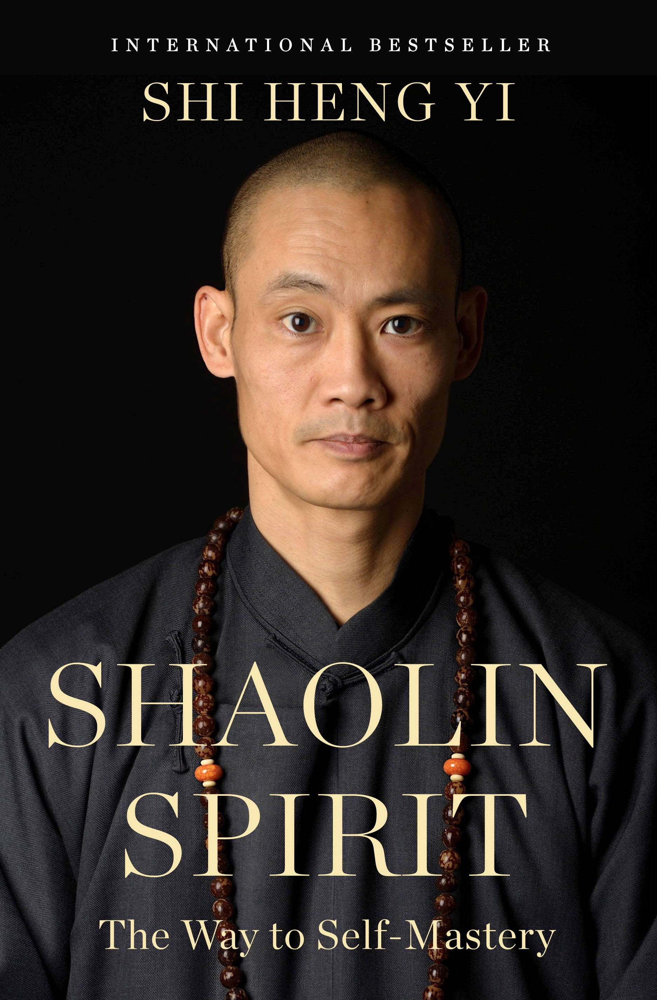

Shaolin Spirit is Shi Heng Yi's introduction to the Shaolin way of life, written with Stefanie Koch and translated into English by Caroline Waight. He is the founder of Shaolin Temple Europe, a Buddhist community in Germany, and a lay disciple of the Songshan Shaolin Temple in China, according to Penguin. The book was first published in Germany as Shaolin Spirit: Meistere dein Leben.
The foreword describes the tradition as more than 1,500 years old and as a combination of internal and external practice, where physical movement matters but is only one component. The aim, in the author's words as I read them, is to build character through the body: willpower, discipline and perseverance, and a reuniting of body and mind that does not depend on your situation in life.
Structurally, each chapter covers a topic and then ends with a method, one of twelve "practical tools" the author says are used at the temple. Publisher copy says the book is rooted in Zen Buddhism and Tao philosophy and touches on sleep, relationships and decision-making. The Introduction opens with a set of reflective questions about where you are in life, and it is candid that it is a starting point, not a complete course: there are links at the back for further practice and courses.
A topic and the author's perspective on it: the Shaolin tradition, Buddhism, his own path, mindset, virtue, the Five Hindrances, and more.
A hands-on practice to close the chapter: breathing, standing, stretching, qi exercises and more. Twelve in all.
Drawn only from the foreword and the opening of Chapter 1, the parts I could read.
The foreword says the Shaolin tradition began more than 1,500 years ago at the Songshan Shaolin Temple in China and that Shaolin Temple Europe aims to make the teachings accessible and relatable for everyday life. It describes the tradition as a mix of internal and external practice, with martial arts and meditation at the front and the body and mind involved in equal measure.
The "Shaolin spirit" of the title is explained as reuniting body and mind and looking inward at who you really are, independent of your circumstances. The author says the book's thirteen chapters explain important topics and offer practices, including zhan zhuang ("standing like a post") paired with mindfulness exercises, and that each chapter closes with one of twelve methods. He cites more than thirty-six years of personal experience.
The author thanks his martial-arts teachers and master brothers by name, his family, his co-author Stefanie Koch, photographer Christine Sommerfeldt and illustrator Marius Boenisch (for the Luohan illustrations). He also thanks members of the Shaolin community who wrote down their own experiences for the book, offered as evidence that people of any age and physical condition can benefit from the practices.
The author admits his students sometimes want him to "get to the point", then explains that his aim is to guide them to a view of life they cannot reach alone. He opens with a run of questions: where you are in life, how you sleep, your appetite and mood, your relationship, your job, whether you feel abundance or lack, whether you are living by your own picture of life or by unspoken expectations, whether you act or react, and whether you are on autopilot or in the driver's seat.
Next comes "What Matters Is the Now": the respectful bow as a way of being present, and the idea that thoughts and feelings can only be perceived now. He pictures life as waves, with every rise followed by a fall, and proposes inner equanimity as the stable ground beneath them. He then previews the virtues (loyalty is his worked example), says they have to be trained daily, and explains that he makes no promises because readers start from different places.
The last pages I could read describe what to expect: the path is not easy or entertaining but is meant to be enriching, honest self-assessment comes first, you learn to listen to the body and later to listen with it, and you must be willing to be a student again. The breathing and standing practices are described as buildable, beginner-friendly exercises.
The title points to a historical chapter on Shaolin martial arts. The foreword, which I did read, gives the frame: a tradition more than 1,500 years old that began at the Songshan Shaolin Temple.
The title says this chapter links the tradition to Buddhism. Publisher copy describes the book as rooted in Zen Buddhism and Tao philosophy, and one Goodreads reviewer says it also ties the practices to Daoism and Confucianism. That is a reader's description, not something I verified. By the contents page it runs about 16 pages before its method.
The title suggests the author's personal story. The foreword cites more than thirty-six years on the path, and the acknowledgements name his teachers. One Goodreads reviewer says the chapters often draw on the author's life before ending with a method.
The foreword confirms that the book teaches zhan zhuang, standing in particular poses and paired with mindfulness exercises, and the Introduction says the standing and breathing practices build on one another. General background, not the book's text: standing practices like this are common in Chinese martial arts and qi gong training.
Title only. I cannot say how the author defines or uses "mindset" here, so I have not guessed. The method's title brings in qi, a concept from traditional Chinese practice; its effects are traditional claims rather than scientifically established findings.
The Introduction, which I read, promises a separate chapter on the virtues of the martial arts, naming loyalty, discipline, trust and strength of will as examples. This title is probably that chapter, though I cannot confirm it. General background, not the book's text: "Wu De" is commonly translated as martial virtue or martial morality.
The title names two failures: never starting, and not walking the whole path. That echoes the Introduction's line that the master shows the way but you must walk it yourself, though I cannot say how the chapter develops it.
Chapter 9 is one of the longest before its method (about 27 pages). The author's CNBC Make It article (17 June 2020, not the book) names the five hindrances as sensual desire, ill will, sloth and torpor, restlessness and skeptical doubt. I have assumed, but not confirmed, that the book's list matches. See the Five Hindrances tab for the framework deep dive, with each element labelled by source.
The shortest chapter by page arithmetic: its text runs about two pages before the method begins. It follows the foreword's body-mind theme, and, like Chapter 6, uses the traditional concept of qi.
Title only. It echoes the foreword's theme of looking inward to realise who you truly are, but I cannot say how the chapter approaches it.
Title only. General background, not the book's text: "the middle way" is a well-known Buddhist idea about avoiding extremes. The Introduction's talk of balance between opposing forces may connect, but I cannot confirm it.
The closing chapter, about six pages by the contents page, and the only one with no method listed after it. Title only; I have no information on its content. The contents page then lists "Additional Links and Courses" (p. 265), which Goodreads reviewers also mention.
Chapter 9 is titled "The Five Hindrances". I could not read it, so this tab is built from three clearly separated layers, each tagged where it appears: the Article names (from the author's CNBC piece), Background general Buddhist context, and My illustration examples I made up to make the ideas concrete. None of it is a summary of the book's chapter.
Background Craving for pleasant experience, the pull to want something other than what is here now.
Background Aversion or resentment: the urge to push away a person, situation or feeling.
Background Heaviness and dullness, low energy for practice or effort. (The article reportedly suggests reconnecting with your original goals; I have not read the detail.)
Background An agitated mind that cannot settle on one thing.
Background Doubt that stalls action: uncertainty about the path, the method or yourself.
| Hindrance | Plain-language meaning Background | How it can look in a work week My illustration | Question to try My illustration |
|---|---|---|---|
| Sensual desire | Craving pleasant experience; wanting something other than what is here | Snacking or scrolling to avoid the hard task | What am I reaching for? |
| Ill will | Aversion, resentment, pushing away | Replaying an irritating meeting | What am I pushing away? |
| Sloth and torpor | Heaviness, dullness, low energy | Putting off planning because everything feels heavy | Rest, or avoidance? |
| Restlessness | An agitated, unsettled mind | Checking messages mid-sentence | What could I finish first? |
| Skeptical doubt | Doubt that stalls action | Quitting a new practice after a week | What small test could I run? |
| # | Chapter (page) | Method (page) | Method length |
|---|---|---|---|
| 1 | Introduction to the Shaolin Spirit (3) | Regulating the Breath (13) | ~6 pp |
| 2 | History of the Shaolin Martial Art (19) | Developing the Skills of the Mind (26) | ~5 pp |
| 3 | Buddhism and the Shaolin Tradition (31) | Sensitivity Training (47) | ~6 pp |
| 4 | My Path (53) | Willpower through the Practice of Standing (72) | ~5 pp |
| 5 | Zhan Zhuang – Standing Like a Tree (77) | Establishing Inner Balance (90) | ~5 pp |
| 6 | Mindset (95) | Opening the Channels of Qi (110) | ~5 pp |
| 7 | Wu De – Combat and Morality (115) | Stretching the Body (130) | ~7 pp |
| 8 | Two Mistakes: Not Beginning, and Not Following the Whole Path (137) | Strengthening the Centre (156) | ~7 pp |
| 9 | The Five Hindrances (163) | Flexibility of the Torso (190) | ~5 pp |
| 10 | Harmonizing Body, Mind and Qi (195) | Yang Qi San Shi – Three Ways to Nourish Qi (197) | ~14 pp |
| 11 | Understanding Your Own Nature (211) | Stimulating the Channels of Energy (231) | ~6 pp |
| 12 | The Middle Way (237) | The Microcosmic Orbit (249) | ~10 pp |
| 13 | The Way of Tea (259) | None listed | n/a |
Most methods are about five to seven pages, with two longer ones (Chapter 10's and Chapter 12's). That is a fact about page counts, not a verdict on the quality of the instructions; one Goodreads reviewer does call the method descriptions basic, and another says they would rather watch the author's videos.
Tick off each method as you work through it. Ticks are not saved if you reload the page.
The Introduction begins with questions like these. Answer them in a notebook before you start, and again after a few weeks.
Dan has suggested that reviewing the book further and redoing it might help him get more out of it. A way to try that: choose one chapter and its method each week, read the chapter, do the method for a few short sessions, and write down two lines on what you noticed. Treat it as an experiment you can drop if it does nothing for you.
Several Goodreads reviewers say the physical methods are easier to follow from video or a teacher than from the page, and the book itself lists further links and courses on its last pages (p. 265). If a method matters to you, look for a demonstration alongside the text. For anything physical, go gently and stop if something hurts.
Shaolin spirit.
Standing like a post.
What matters is the Now.
Inner equanimity.
The twelve methods.
Paraphrases, not direct quotes.
A teacher can point out the path; the walking is yours.
Knowing the virtues is not enough; they have to be trained every day.
Ups and downs are part of every life; balance is what lets you ride them.
Repetition with insight builds any skill.
Be honest about where you are before deciding where you can go.
| Category | Claude | Dan | Why Claude scored it that way |
|---|---|---|---|
| Ideas | 3.5 | 4.0 | A coherent frame (body-mind practice, daily virtue, equanimity) drawn from long traditions, but reviewers say it covers a lot and can feel simplistic, so I held it below a 4. |
| Readability | 3.5 | 3.0 | A clear chapter-then-method structure and an inviting, question-led introduction; readers call the style accessible, while some find it repetitive or heavy on empty words. |
| Actionability | 3.0 | 2.0 | Twelve concrete methods is a real strength on paper, but most run only five to seven pages and some reviewers call them too basic to follow without video or a teacher. |
| Evidence | 2.5 | 3.0 | This is a tradition-and-experience teaching, not research. Claims about qi and energy channels are traditional, not scientifically established, and support comes from the author's experience and community testimonials. |
| Category average | 3.13 | 3.00 | Claude's overall 3.5 is 0.4 above its own category average, because I weighted Evidence less for a practice-based book; it sits 0.3 below the Goodreads 3.79. Dan's overall (3.0) matches his category average exactly. The widest gap between Dan and Claude is Actionability (2.0 vs 3.0). |
Categories are the same four used for every review: Ideas, Readability, Actionability, Evidence.
Goodreads (Shaolin Spirit: The Way to Self-Mastery by Shi Heng Yi, English edition page; title and author confirmed on the page): 1,061 ratings, 118 reviews, average 3.79. Star split: 5★ 27% (290), 4★ 35% (377), 3★ 27% (292), 2★ 7% (80), 1★ 2% (22). I read the first 30 reviews shown on the page, mostly the opening of each, plus one in full. Several are in German or Portuguese; I read them as written. This is a small slice of 118, not a representative sample.
What you may have missed: one reader (Dec 2023, 1 star) disputes the author's "35th-generation Shaolin master" credentials and his training lineage and says the advice resembles generic self-help. That is a single, contested claim that I could not verify, and Penguin's author note describes him as founder of Shaolin Temple Europe and a lay disciple of the Songshan Shaolin Temple. I report it as one reader's view, not as fact.
A different reader (Portuguese, 2.5 stars) argues the book treats self-mastery as pure individual effort, with little room for historical, social or physical constraints. That is close to Dan's own feeling that the concepts were not a route to self-mastery, though it is one reader's view.
Dan rates Shaolin Spirit about 3 out of 5. He really wanted to like it, but he found the author's monotone nature hard to get past.
He felt that many of the concepts were not a way to self-mastery, as he had hoped. The book talked a lot about certain ideas, but he did not feel there was much to take away that he would actually use. He scored Ideas 4, Readability 3, Actionability 2 and Evidence 3.
The idea of the Shaolin spirit does interest him: Buddhism and inner peace as a way of working out who he is and where he wants to go, and putting those ideas to use, matter to him. He is not sure this book is the way to find that. It may be a way of getting started on the journey, but he needs to research more than this one book. He suggests that reviewing the book further and redoing it might help him get more out of it.
Written up from Dan's own words (23 Nov 2026). His view stands apart from the Claude and reader views above.
From the part I could read: the book argues that practice, not knowledge, is the point. Virtues and exercises have to be repeated and brought into daily life, and a book can only point at the path. That cuts both ways, since it is the book's best idea and also why a reader like Dan, wanting something to use immediately, may find a short written introduction hard to act on.
Shaolin Spirit is a structured, modest introduction to the Shaolin way, with thirteen chapters and twelve methods, written to be a starting point. Readers on Goodreads rate it a respectable 3.79, praising its accessibility and criticising its thin practical detail and promotional streak. Dan rates it 3 out of 5: the ideas interest him, but he did not find a route to self-mastery or much to use.
If the subject draws you, read it as a first step and plan to look beyond it. Dan's own suggestion of reviewing the book further and redoing it is a reasonable way to test whether more is there. Remember that this review is based on a partial read, so the chapters beyond the opening deserve your own judgement.